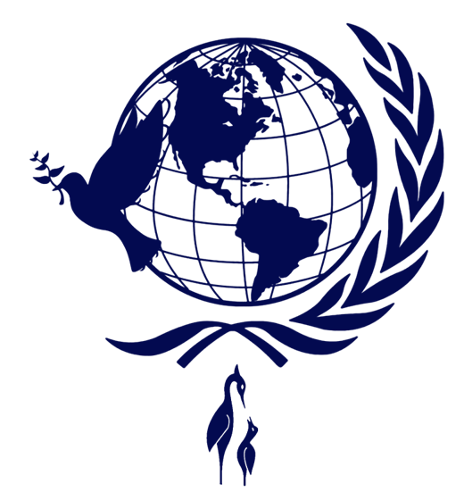

GSC MUN convenes students to debate, negotiate and draft resolutions on the issues that shape our world.

GSC MUN is a place where young delegates learn the craft of diplomacy: researching, speaking, negotiating and building consensus, with a shared hope for a more peaceful world.
Choose your category and sign up below.
Countries and committees are shared with participants.
Background guides and position papers.
Opening ceremony, committee sessions, closing and awards. Dates to be announced.
Select how you would like to take part.
Choose a category above to begin.
Organisations supporting GSC MUN will appear here.
Private delegates register individually, delegations register as a group under one institution, and observers attend without representing a country.
Yes. First-timers are welcome, and background guides will help you prepare.
They will be shared with registered participants and published on this site.